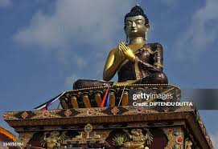
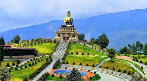
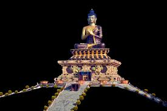

🪷 Buddha Statue – A Symbol of Peace and Enlightenment
The Buddha Statue is one of the most sacred and admired symbols in Buddhism, representing peace, wisdom, and enlightenment. Buddha statues are found in temples, monasteries, meditation centers, and historical sites across many countries including India, Nepal, Thailand, Sri Lanka, Japan, and China. Each statue reflects different stages of Lord Buddha’s life, such as meditation, teaching, protection, or blessing.
Most Buddha statues are crafted with serene facial expressions, closed or half-open eyes, and gentle postures to symbolize inner calmness and mindfulness. The statues are made using materials like stone, bronze, marble, wood, gold, and even jade, depending on the region and culture. The calm and peaceful appearance of the Buddha inspires people to practice compassion, love, and patience in their daily lives.
The statue’s hand gestures, known as Mudras, carry deep meanings. For example, the Dhyana Mudra represents meditation, Abhaya Mudra shows protection and fearlessness, and the Dharmachakra Mudra represents the teaching of the path to enlightenment. These gestures make each statue meaningful and unique.
Today, the Buddha Statue stands as a symbol of spiritual awakening, harmony, and peace for millions of people around the world. Whether placed in a grand temple or a simple meditation room, the presence of a Buddha statue brings positivity and tranquility to the surroundings.
🗽 130-foot Buddha Statue
The main attraction is a 40-meter (130 feet) tall statue of Lord Buddha sitting in a meditation pose.
The statue was built to celebrate the 2600th birth anniversary of Lord Buddha.
🌿 Beautiful Gardens
The entire park is surrounded by green landscapes, flower gardens, and walking paths.
🏔 Mountain Views
From the park, you can see stunning views of the Himalayan mountains, especially the Kanchenjunga range.
🕍 Buddhist Monastery
Next to the statue, there is a monastery and a meditation centre.
Inside the base of the statue, there is a small museum showing the life of Buddha.



🕒 Best Time to Visit
March to June → Pleasant weather
September to November → Clear sky & mountain views
Today, the Buddha Statue stands as a symbol of spiritual awakening, harmony, and peace for millions of people around the world.